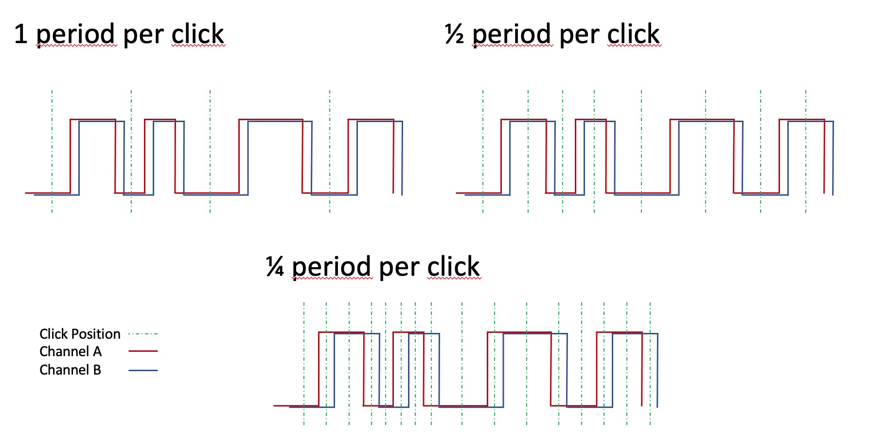

Rotary Encoder II
Rotary Encoder II Plugin
by 7h0mas-R
This is an alternative implementation of a rotary encoder driver for integration with Volumio. It dynamically loads device tree overlays to access the rotaries and is more responsive with the tested encoders than the existing plugin.
Configuring the Plugin
The plugin currently supports up to three encoders. The code is implemented in such a way, that this can quite easily be expanded - feel free to create a branch and do it.
After installing the plugin, each encoder can be individually enabled in the settings.

Img 1: Settings for one of the encoders
After enabling an encoder, the following parameters can be set:
Periods per step
There are different encoder types in the market. Many of them have a ratchet mechanism, so you can feel 'click' positions when you turn the knob.
There are three different implementations in the DT overlay driver:
1/1: Full period per step
From one tick to the next, both switches of the encoder perform a full cycle on - off - on (or vice versa).
1/2: Half period per step
From one tick to the next, both switches of the encoder perform half a cycle on - off (or vice versa)
1/4: Quarter period per step
From one tick to the next, only one of both switches of the encoder changes state. The other switch will change state with the next click in the same direction.
If you are uncertain about your type, check the manufacturers datasheet or use a multimeter to measure the situation in your rotary.

Img 2: Switching characteristic of different rotary types supported.
Pin A GPIO/ Pin B GPIO
The GPIO pins that are connected to the A and B channels of your encoder.
Dial Function
Pick the functionality you would like for your encoder:
- Volume down/up
- Skip previous/next
- Seek backwards/forward
- Emit websocket message
The Emit function opens four additional text boxes for providing the websocket commands and data for clockwise (CW) and counter-clockwise (CCW) turns. It allows, to provide commands to a websock emitter and can be used to trigger other functions inside other plugins. For example, if you have a Plugin controlling a Dimmer with a function dim taking an argument 'up' or 'down' you would need to put 'dim' into both command fields and 'up' or 'down' into the respective data field.
You could also send Volumio Volume or Skip functions via this option (just to give you an idea):
Volume:
- Command CW: 'volume'
- Command CCW: 'volume'
- Data CW: '+'
- Data CCW: '-'
Skip:
- Command CW: 'prev'
- Command CCW: 'next'
- Data CW: '' (empty, prev takes no argument)
- Data CCW: '' (empty, next takes no argument)
WARNING:
If you use the Emit function, remember that a fast turn of the knob can send a lot of messages in short time, so the called function better be fast or prepared for 'flooding'.
To assure fault-free operation is your responsibility in this case.
Button GPIO
GPIO pin of your device that is connected to the encoder push button.
Debounce Time
If you do not have hardware debouncing for your push button, you can set a software debouncing time here. The unit is milliseconds, try values below 100ms, everything higher may generate poor user-experience.
Button Logic-Level Active Low
By default the plugin assumes, that your GPIOs are pulled low and that the GPIO will become logical high, when you push the button. If your hardware works the other way round and your button pulls the GPIO low when pressed, you have to activate this switch.
Short Press Action/ Long Press action
Various functionalities that can be associated with the push button. For compatibility I have added most functions that the initial Rotary Encoder Plugin supports. Additionally there is a an Emit Function equivalent to the one available for the rotation. You find more information there.
Long press action is executed if the button is pushed for longer than 1.5 seconds.
Available Commands:
- Play
- Pause
- Play/Pause toggle
- Stop
- Repeat
- Random
- Clear Queue
- Mute
- Unmute
- Toggle Mute
- System Shutdown
- System Reboot
- Emit websocket message
Differences compared to Rotary Encoder Plugin
The initial rotary encoder plugin by Saiyato is built based on npm OnOff library and a derived onoff-rotary to read the GPIO pins of the Linux system (e.g. Raspberry Pi) and the implementation of the Gray-Code is tailored to the use of the KY040 encoder.
With my custom made hardware using three ALPS STEC11B03 encoders, it worked but the response was not really satisfactory because the plugin would only respond on every second 'tick' of the encoder and would sometimes misinterpret the direction.
I tried to improve it with hardware debouncing (see here for tips) and by optimizing the implementation but the result was not satisfactory.
I finally wrote my own implementation based on DT overlay driven rotary encoders giving me perfect results. Since the hardware debouncing is in my hardware anyway now, I did not bother to try the plugin without the Schmitt-Trigger - I guess that it would work without it, too. Feel free to leave a note, if you can confirm this.
I first thought about implementing my solution into the existing plugin, but finally decided against it due to lack of time and because is rather an alternative than an extension.
If your system does not support DT overlays or you run into other issues, the other plugin may still be your first choice.
Feel free to try both Plugins and pick the one, that suits your application best.
If this Plugin works for you and you use a new type of encoder, it would be nice if you add your model to the list of supported devices below, so others can pick one that is working.
If you should observe problems, you may create an issue, but I have very limited time to look into that. I rely on enthusiasts to dig into the limitations of the plugin - the debug function in the settings is very chatty, so it should help to get to the issue fast.